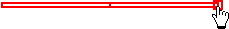
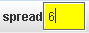
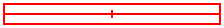
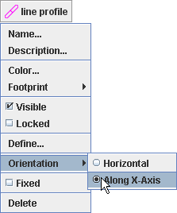
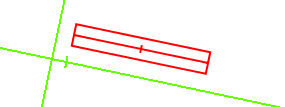
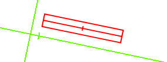

Profil
črte

Profil
črte
Sled Profil črte je orodje za merjenje svetlosti in podatkov RGB vzdolž črte na video sliki. Če z razponom debelino črte povečamo, so piksli nad in pod črto zaradi zmanjšanja šuma oziroma povečanja občutljivosti povprečeni.
1. Označevanje črte

Črto označimo s klikom in vlečenjem miške (kurzor v obliki križca). Črta je narisana kot ozek pravokotnik, ki obkroža piksle, ki naj bi jih analizirali s z orodjem profil črte.
Dolžino črte spreminjamo z vlečenjem enega od koncev. Črto premikamo z vlečenjem njenega centra.
2. Dodajanje
razpona

Število vzorčenih pikslov (da vi dobili bolj gladko povprečje) povečamo tako, da profilu črte dodamo razpon (spread). Izberemo črto in v polje v orodni vrstici vnesemo želeni razpon v pikslih.
Razpon pikslov se razširja na obeh straneh črte. Zato je za dano podatkovno točko na črti celotno število vzorčenih pikslov (torej širina profila črte) enako f 1 + 2*razpona. Obris profila črte prikazuje vse piksle, ki so bvključeni v povprečenje.

3. Usmeritev črte
Privzeto ima profil črte vodoravno usmeritev, torej vzporedno z zgornjim oziroma spodnjim robom video slike. Če izberemov menuju nsledi za usmeritev osi x opcijo Vzdolž osi Xi, bo črta ostala vzporedna z osjo x. To je uporabno pri merjenju spektra, ki je bil na primer pomotoma posnet z nagnjeno kamero.
 

4. Sprostitev črte
Privzeto ima profil črte fiksen položaj. To pomeni, da sta njeno središče in dolžina enaka v vseh sličicah. Z razkljukanjem Fiksne pozicije menuju sledi omogočimo spreminjanje teh lastnosti od sličice do sličice.